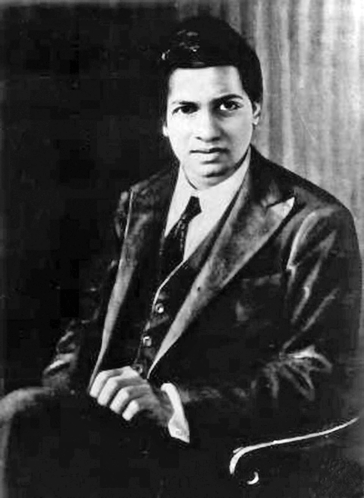

1887
Birth in India
Srinivasa Ramanujan was born in Erode in present-day Tamil Nadu, India.
A Tribute to a Mathematical Genius
The extraordinary mathematician whose intuition transformed number theory and continues to inspire generations.
Discover His Story
THE MAN BEHIND THE NUMBERS
Srinivasa Ramanujan was an Indian mathematician whose extraordinary ability to recognise mathematical patterns made him one of the most distinctive figures in the history of mathematics.
HIS STORY
Born in 1887 in Erode, India, Srinivasa Ramanujan developed a deep fascination with mathematics while still very young. Much of his advanced mathematical knowledge was developed independently, driven by intense curiosity and an unusual ability to recognise numerical relationships that others might overlook.
His passion for mathematics became the central focus of his life. Even with limited access to formal academic training and mathematical resources, Ramanujan filled notebooks with identities, infinite series, continued fractions and mathematical results. His work revealed a powerful combination of intuition, originality and persistence.
A major turning point came when his mathematical work reached British mathematician G. H. Hardy at the University of Cambridge. Hardy recognised Ramanujan's exceptional talent, and their collaboration brought his discoveries to a much wider mathematical community. During his years in England, Ramanujan produced influential work in number theory and related areas.
Ramanujan's life was short, but the impact of his ideas has endured far beyond his lifetime. His notebooks continued to inspire mathematical research for decades, and many of his observations became foundations for later discoveries. His story remains a powerful example of imagination, dedication and the limitless potential of human curiosity.
The number 1729 is famously associated with Ramanujan. It is the smallest positive integer that can be expressed as the sum of two positive cubes in two different ways.
JOURNEY THROUGH TIME
Key moments that shaped Ramanujan's remarkable mathematical journey.
Srinivasa Ramanujan was born in Erode in present-day Tamil Nadu, India.
As a teenager, Ramanujan immersed himself in advanced mathematics and began developing his own results.
Ramanujan sent examples of his mathematical discoveries to G. H. Hardy, who recognised his exceptional talent.
Ramanujan travelled to England and began working with mathematicians at the University of Cambridge.
He was elected a Fellow of the Royal Society in recognition of his remarkable contributions to mathematics.
Ramanujan died at the age of 32, leaving behind mathematical ideas that continue to be studied and developed.
An equation for me has no meaning unless it expresses a thought of God.
— Srinivasa Ramanujan
HIS LEGACY
Ramanujan's legacy is not defined only by formulas and theorems. His life demonstrates how curiosity, persistence and original thinking can overcome enormous limitations.
Today, his work remains relevant to mathematicians around the world, while his life continues to inspire students, researchers and anyone willing to explore ideas beyond conventional boundaries.
Image: Oberwolfach Photo Collection, Public Domain, via Wikimedia Commons.